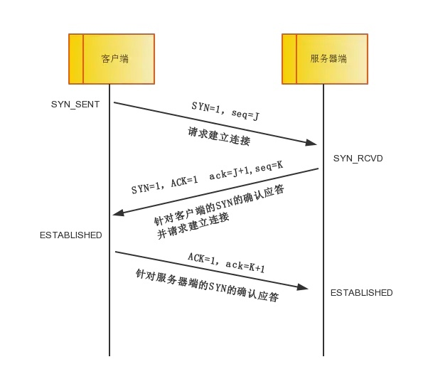
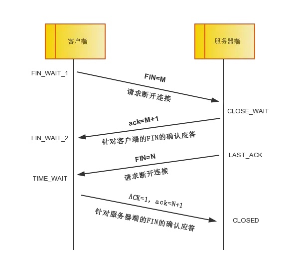

1、TCP三次握手过程

2、为什么TCP需要3次握手
TCP 是可靠的传输控制协议，而三次握手是保证数据可靠传输又能提高传输效率的最小次数。为什么?RFC793，也就是 TCP 的协议 RFC 中就谈到了原因，这是因为:
为了实现可靠数据传输， TCP 协议的通信双方，都必须维护一个序列号， 以标识发送出去的数据包中，哪些是已经被对方收到的。三次握手的过程即是通信双方相互告知序列号起始值，并确认对方已经收到了序列号 起始值的必经步骤。
3、TCP的四次挥手

- 第一次挥手：客户端发送一个FIN=M，用来关闭客户端到服务器端的数据传送，客户端进入FIN_WAIT_1状态。意思是说"我客户端没有数据要发给你了"，但是如果你服务器端还有数据没有发送完成，则不必急着关闭连接，可以继续发送数据。
- 第二次挥手：服务器端收到FIN后，先发送ack=M+1，告诉客户端，你的请求我收到了，但是我还没准备好，请继续你等我的消息。这个时候客户端就进入FIN_WAIT_2 状态，继续等待服务器端的FIN报文。
- 第三次挥手：当服务器端确定数据已发送完成，则向客户端发送FIN=N报文，告诉客户端，好了，我这边数据发完了，准备好关闭连接了。服务器端进入LAST_ACK状态。
- 第四次挥手：客户端收到FIN=N报文后，就知道可以关闭连接了，但是他还是不相信网络，怕服务器端不知道要关闭，所以发送ack=N+1后进入TIME_WAIT状态，如果Server端没有收到ACK则可以重传。服务器端收到ACK后，就知道可以断开连接了。客户端等待了2MSL后依然没有收到回复，则证明服务器端已正常关闭，那好，我客户端也可以关闭连接了。最终完成了四次握手。
4、为什么要有TIME_WAIT状态
- 可靠终止 TCP 连接。如果最后一个 ACK 报文因为网络原因被丢弃，此时 server 因为 没有收到ACK而超时重传FIN报文，处于TIME_WAIT状态的client可以继续对FIN报文做回 复，向 server 发送 ACK 报文。
- 保证让迟来的 TCP 报文段有足够的时间被识别和丢弃。连接结束了，网络中的延迟 报文也应该被丢弃掉，以免影响立刻建立的新连接。
5、为什么 TCP 需要四次挥手
TCP 是全双工的连接，必须两端同时关闭连接，连接才算真正关闭。如果一方已经准备关闭写，但是它还可以读另一方发送的数据。发送给 FIN 结束报文给 对方对方收到后，回复 ACK 报文。当这方也已经写完了准备关闭，发送 FIN 报文，对方回复 ACK。两端都关闭，TCP 连接正常关闭。
概述NIO
NIO编程中涉及到如下几个
-
Buffer:与 Channel 进行交互，数据是从 Channel 读入缓冲区，从缓冲区写入 Channel中的
- flip 方法 : 反转此缓冲区，将 position 给 limit，然后将 position 置为 0，其实就是切换 读写模式
- clear 方法 :清除此缓冲区，将 position 置为 0，把 capacity 的值给 limit。
- rewind 方法 : 重绕此缓冲区，将 position 置为 0
DirectByteBuffer 可减少一次系统空间到用户空间的拷贝。但 Buffer 创建和销毁的成本 更高，不可控，通常会用内存池来提高性能。直接缓冲区主要分配给那些易受基础系统的本 机 I/O 操作影响的大型、持久的缓冲区。如果数据量比较小的中小应用情况下，可以考虑使 用 heapBuffer，由 JVM 进行管理。
-
Channel: 表示 IO 源与目标打开的连接，是双向的，但不能直接访问数据，只能与 Buffer 进行交互。通过源码可知，FileChannel 的 read 方法和 write 方法都导致数据复制了两次!
-
Selector 可使一个单独的线程管理多个 Channel
- open 方法: 创建 Selector
- register 方法: 向多路复用器器注册通道，可以监听的事件类型:读、写、连接、accept。注册事件后会产生一个SelectionKey
- SelectionKey: 它表示 SelectableChannel 和 Selector 之间的注册关系，
- wakeup 方法: 使尚未返回的第一个选择操作立即返回，唤醒的原因是:注册了新的 channel 或者事件; channel 关闭，取消注册;优先级更高的事件触发(如定时器事件)，希望及时处理
NIO 的服务端建立过程:Selector.open():打开一个 Selector;ServerSocketChannel.open(): 创建服务端的 Channel;bind():绑定到某个端口上。并配置非阻塞模式;register():注册 Channel 和关注的事件到 Selector 上;select()轮询拿到已经就绪的事件。
HTTP1.0 与HTTP1.1的区别
HTTP1.0 最早在网页中使用是在 1996 年，那个时候只是使用一些较为简单的网页上和 网络请求上，而 HTTP1.1 则在 1999 年才开始广泛应用于现在的各大浏览器网络请求中，同时 HTTP1.1 也是当前使用最为广泛的 HTTP 协议。
主要区别主要体现在如下几点：
- 缓存处理，在HTTP1.0中主要使用header里的 if-Modified-Since，Expires来做缓存判断的标准，HTTP1.1 则引入了更多的缓存控制策略，如：Entity Tag、If-Unmodified-Since、If-Match、If-None-Match等更多可供选择的缓存头来控制缓存策略
- 带块优化以及网络连接的使用，HTTP1.0 中，存在一些浪费带宽的现象，例如客户端 只是需要某个对象的一部分，而服务器却将整个对象送过来了，并且不支持断点续传功能， HTTP1.1 则在请求头引入了 range 头域，它允许只请求资源的某个部分，即返回码是 206 (Partial Content)，这样就方便了开发者自由的选择以便于充分利用带宽和连接。
- 错误通知的管理，在 HTTP1.1 中新增了 24 个错误状态响应码，如 409(Conflict)表 示请求的资源与资源的当前状态发生冲突;410(Gone)表示服务器上的某个资源被永久性 的删除。
- Host头处理，在 HTTP1.0 中认为每台服务器都绑定一个唯一的 IP 地址，因此，请求 消息中的 URL 并没有传递主机名(hostname)。但随着虚拟主机技术的发展，在一台物理 服务器上可以存在多个虚拟主机(Multi-homed Web Servers)，并且它们共享一个 IP 地址。 HTTP1.1 的请求消息和响应消息都应支持 Host 头域，且请求消息中如果没有 Host 头域会报 告一个错误(400 Bad Request)。
- 长连接，HTTP 1.1 支持长连接(PersistentConnection)和请求的流水线(Pipelining) 处理，在一个 TCP 连接上可以传送多个 HTTP 请求和响应，减少了建立和关闭连接的消耗和延迟，在 HTTP1.1 中默认开启 Connection: keep-alive，一定程度上弥补了 HTTP1.0 每次请 求都要创建连接的缺点。
HTTP2.0 和 HTTP1.X 相比的新特性
新的二进制格式(Binary Format)，HTTP1.x 的解析是基于文本。基于文本协议的格式 解析存在天然缺陷，文本的表现形式有多样性，要做到健壮性考虑的场景必然很多，二进制 则不同，只认 0 和 1 的组合。基于这种考虑 HTTP2.0 的协议解析决定采用二进制格式，实现方便且健壮。
多路复用(MultiPlexing)，即连接共享，即每一个 request 都是是用作连接共享机制的。 一个 request 对应一个 id，这样一个连接上可以有多个 request，每个连接的 request 可以随 机的混杂在一起，接收方可以根据 request 的 id 将 request 再归属到各自不同的服务端请求里面。
header 压缩，如上文中所言，对前面提到过 HTTP1.x 的 header 带有大量信息，而且每 次都要重复发送，HTTP2.0 使用 encoder 来减少需要传输的 header 大小，通讯双方各自 cache 一份 header fields 表，既避免了重复 header 的传输，又减小了需要传输的大小。
服务端推送(server push)，HTTP2.0 也具有 server push 功能。
HTTP2.0 的多路复用和 HTTP1.X 中的长连接复用有什么区别
- HTTP/1.0 一次请求-响应，建立一个连接，用完关闭;每一个请求都要建立一个连接;
- HTTP/1.1 Pipeling 解决方式为，若干个请求排队串行化单线程处理，后面的请求等待前面请求的返回才能获得执行机会，一旦有某请求超时等，后续请求只能被阻塞，毫无办法， 也就是人们常说的线头阻塞;
- HTTP/2.0 多个请求可同时在一个连接上并行执行。某个请求任务耗时严重，不会影响到其它连接的正常执行
Http 与 Https 的区别
HTTPS 协议(HyperText Transfer Protocol over Secure Socket Layer):一般理解为 HTTP+SSL/TLS，通过 SSL 证书来验证服务器的身份，并为浏览器和服务器之间的通信进行加密。
-
HTTP 的 URL 以 http:// 开头，而 HTTPS 的 URL 以 https:// 开头
HTTP 是不安全的，而 HTTPS 是安全的
-
HTTP 标准端口是 80 ，而 HTTPS 的标准端口是 443
-
在 OSI 网络模型中，HTTP 工作于应用层，而 HTTPS 的安全传输机制工作在传输层
-
HTTP 无法加密，而 HTTPS 对传输的数据进行加密
-
HTTP 无需证书，而 HTTPS 需要 CA 机构颁发的 SSL 证书
HTTPS 方式与 Web 服务器通信时的步骤
- 客户使用 https 的 URL 访问 Web 服务器，要求与 Web 服务器建立 SSL 连接。
- Web 服务器收到客户端请求后，会将网站的证书信息(证书中包含服务器公 钥<非对称加密>)传送一份给客户端。(HTTPS 中，服务端将公钥发给数字证书认证机构进行安全认证并对公钥进行数字签名，完成后公钥和签名组合成数字证书。在和客户端通信时， 服务端将数字证书发给客户端，客户端通过第三方安全认证机构(一般会在浏览器开发时， 内置在浏览器中)对数字证书上的签名进行验证。)
- 客户端的浏览器与 Web 服务器开始协商 SSL 连接的安全等级，也就是信息加 密的等级。
- 客户端的浏览器根据双方同意的安全等级，建立会话密钥<对称加密>，然后 利用服务器公钥将会话密钥加密，并传送给网站。
- Web 服务器利用自己的私钥解密出会话密钥。
- Web 服务器利用会话密钥加密与客户端之间的通信。
什么是 Http 协议无状态协议?怎么解决?
无状态协议对于事务处理没有记忆能力。缺少状态意味着如果后续处理需要前面的信息,却无法获取到，也就是说，当客户端一次 HTTP 请求完成以后，客户端再发送一次 HTTP 请求，HTTP 并不知道当前客户端是一个”老用户“。
可以使用 Cookie 来解决无状态的问题，Cookie 就相当于一个通行证，第一次访问的时 候给客户端发送一个 Cookie，当客户端再次来的时候，拿着 Cookie(通行证)，那么服务器就 知道这个是”老用户“
一次完整的 HTTP 请求所经历的步骤
-
首先进行 DNS 域名解析(本地浏览器缓存、操作系统缓存或者 DNS 服务器)，首先会搜索浏览器自身的 DNS 缓存(缓存时间比较短，大概只有 1 分钟，且只能容纳 1000 条缓存)
- 如果浏览器自身的缓存里面没有找到，那么浏览器会搜索系统自身的 DNS 缓存
- 如果还没有找到，那么尝试从 hosts 文件里面去找
- 在前面三个过程都没获取到的情况下，就去域名服务器去查找
-
三次握手建立 TCP 连接
在 HTTP 工作开始之前，客户端首先要通过网络与服务器建立连接，HTTP 连接是通过 TCP 来完成的。HTTP 是比 TCP 更高层次的应用层协议，根据规则，只有低层协议建立之后，才能进行高层协议的连接，因此，首先要建立 TCP 连接，一般 TCP 连接的端口号是 80;
-
客户端发起 HTTP 请求
-
服务器响应 HTTP 请求
-
客户端解析 html 代码，并请求html代码中的资源。浏览器拿到 html 文件后，就开始解析其中的 html 代码，遇到 js/css/image 等静态资源 时，就向服务器端去请求下载
-
客户端渲染展示内容
-
关闭 TCP 连接
一般情况下，一旦服务器向客户端返回了请求数据，它就要关闭 TCP 连接，然后如果 客户端或者服务器在其头信息加入了这行代码 Connection:keep-alive ，TCP 连接在发送后 将仍然保持打开状态，于是，客户端可以继续通过相同的连接发送请求，也就是说前面的 3 到 6，可以反复进行。保持连接节省了为每个请求建立新连接所需的时间，还节约了网络带宽。
常见的 HTTP 相应状态码
- 200:请求被正常处理
- 204:请求被受理但没有资源可以返回
- 206:客户端只是请求资源的一部分，服务器只对请求的部分资源执行 GET 方法，相应报文中通过 Content-Range 指定范围的资源。
- 301:永久性重定向
- 302:临时重定向
- 303:与 302 状态码有相似功能，只是它希望客户端在请求一个 URI 的时候，能通过 GET 方法重定向到另一个 URI 上
- 304:发送附带条件的请求时，条件不满足时返回，与重定向无关
- 307:临时重定向，与
- 302 类似，只是强制要求使用 POST 方法
- 400:请求报文语法有误，服务器无法识别
- 401:请求需要认证
- 403:请求的对应资源禁止被访问
- 404:服务器无法找到对应资源
- 500:服务器内部错误
- 503:服务器正忙
常用的 HTTP 方法有哪些
- GET: 用于请求访问已经被 URI(统一资源标识符)识别的资源，可以通过 URL 传参给服务器
- POST:用于传输信息给服务器，主要功能与 GET 方法类似，但一般推荐使用 POST 方式。
- PUT: 传输文件，报文主体中包含文件内容，保存到对应 URI 位置。
- HEAD: 获得报文首部，与 GET 方法类似，只是不返回报文主体，一般用于验证 URI 是否有效。
- DELETE:删除文件，与 PUT 方法相反，删除对应 URI 位置的文件。 OPTIONS:查询相应 URI 支持的 HTTP 方法
HTTP 请求报文与响应报文格式
HTTP协议（二）-- HTTP 协议报文结构
URI 和 URL 的区别
URI，是 uniform resource identifier，统一资源标识符，用来唯一的标识一个资源。
Web 上可用的每种资源如 HTML 文档、图像、视频片段、程序等都是一个来 URI 来定位 的
URI 一般由三部组成:
- 访问资源的命名机制
- 存放资源的主机名
- 3资源自身的名称，由路径表示，着重强调于资源。
URL 是 uniform resource locator，统一资源定位器，它是一种具体的 URI，即 URL 可以用 来标识一个资源，而且还指明了如何 locate 这个资源。
URL是Internet上用来描述信息资源的字符串，主要用在各种WWW客户程序和服务器 程序上，特别是著名的 Mosaic。
采用 URL 可以用一种统一的格式来描述各种信息资源，包括文件、服务器的地址和目 录等。
URL 一般由三部组成:
- 协议(或称为服务方式)
- 存有该资源的主机 IP 地址(有时也包括端口号)
- 主机资源的具体地址。如目录和文件名等